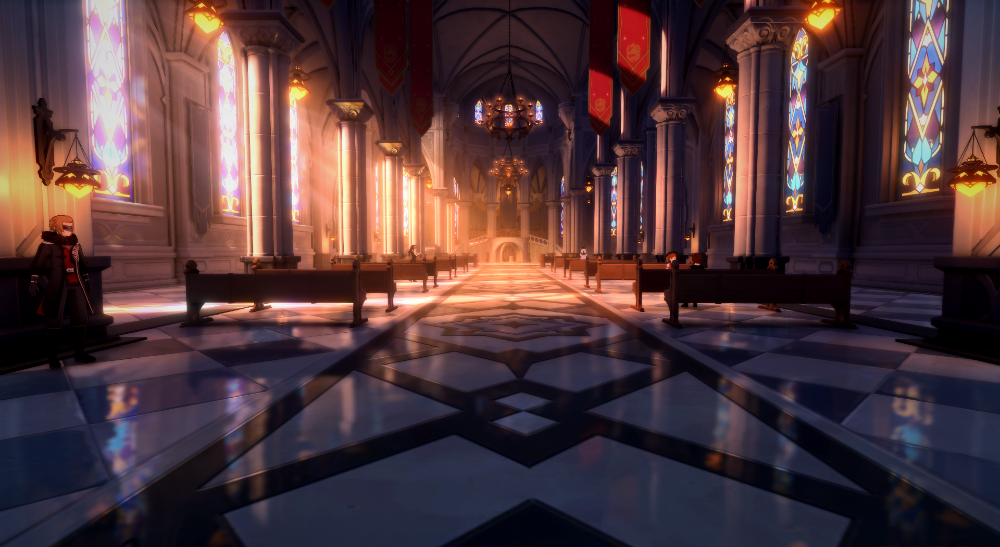
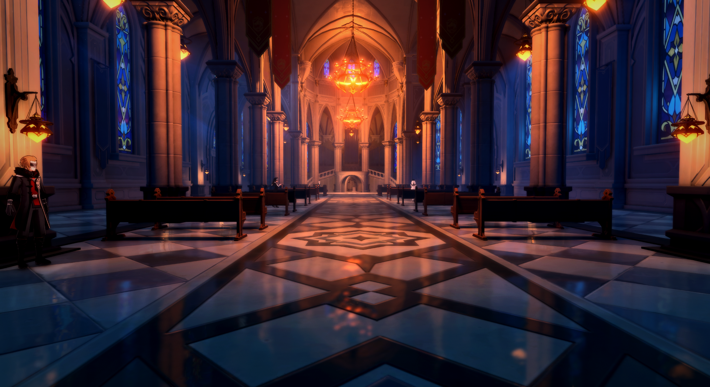
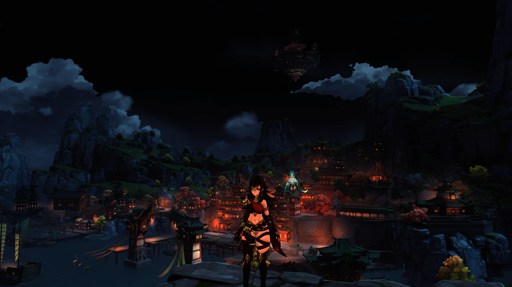
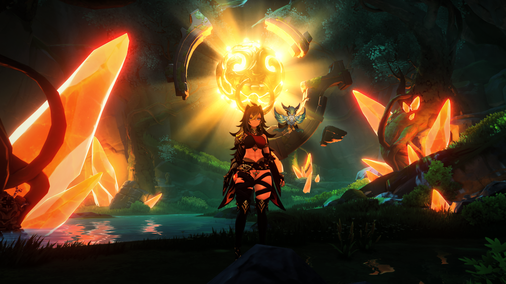

From lecture and projects we’ve learned how to apply shaders on top of meshes, and with the onset of state of the art rendering techniques using NeRF, we thought it would be interesting to merge the two ideas together – why not try to apply LeRF / NeRF into game scenes, instead of simply pictures.
NeRF is fundamentally encoding objects and primitives into a neural network. Demos exist for the application of NeRF in projects like LeRF (Language encoded Radiance Fields), which applies shading on top of scenes indicating primitives that belong to text input. Embedding this technology into a game engine is not trivial either, since the rendering pipeline is fairly complex. This brought to us the idea of shaders, so why not take an existing game, inject shaders into it, and allow NeRF to interact with the rendering engine that way? Unfortunately, the answer to this question is not trivial.
Firstly, released games do not generally support modifications to the game files to add functionality to the game, even for simple graphics modifications. In fact, in most cases, game developers goe out of their way to make it hard for users to modify their game post-production through the use of anti-cheat software. To get our shaders working, we have to modify the rendering pipeline of the game to apply those shaders, which means we have to subvert the anti-cheat, or to use drivers in the GPU themselves to support these shaders. Even if we are able to get shaders working, there is no guarantee that NeRF would behave exactly as expected, since we need to capture the frame buffer to feed to NeRF as input, which effectively means we are introducing NeRF as part of the last stage of the rendering pipeline. This means that, although it could allow us to potentially add interesting shading effects - like LeRF - it also means that we need to train models to exploit the encoding provided by NeRF, and these models would be extremely purpose specific. This integration is also non-trivial. One such example of this are features regarding angles, which is not easily obtained from the game software.
To resolve our first challenge of making post-modifications to the game files to support shaders, we will use a game which already has either their defense mechanisms subverted (most Unity-derived games fit into this category due to their il2cpp), and an injector working for us, so to allow us to focus solely on creating the shaders and tuning them for the game. To get the scene so that it can be fed into NeRF, we will play around the game files and obtain all of the necessary features required for training the model.
To resolve the difficulty of attaching NeRF onto our shaders, as a proof of concept, we will run NeRF as a separate process on the framebuffer of the game, running entirely separately to avoid the problem of injecting more DLL’s into the games files. Even if the rendering times for LeRF / NeRF are significantly longer than what’s required for a game, we should be alright since they are running semi-independently.
|  |  |
|  |  |
This is how we will inject Shaders into Genshin Impact